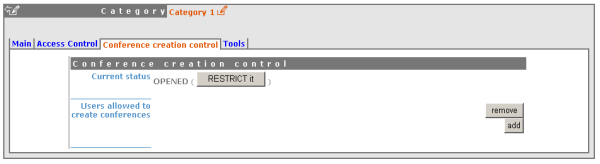
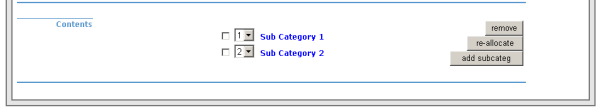

| Prev | Chapter 1. Categories | Next |
From the main tab in the Category Management Area:

You can modify the details of the category; including the default styles for meetings and lectures within the category (See Meetings or Lectures). You can also add, remove and re-allocate events or sub categories.
From the management area you can protect your category using the 3 controls for access levels: Modification Control, Access Control and Domain Control. You can add Users or Groups to the Modification and Access Control lists.

Modification ControlCategory Managers can be added to a category to allow access to the management area for modification. Category managers are either those listed in the modification control list, or administrators. The creator of a category will be able to modify it without be listed.
Access Control A category can be public or private; Public: Any body can view a public category and any user can add events to it. However users will only be able to see the events inside the category to which they have access to. Private: Only those users in the access list or administrators can access the category and add events. When a Category is made private, the option for domain control is omitted and any event or category made inside will also be private. The category will be displayed with "(protected)" after its name to show it is private.
Domain Control - Access to a category can be defined by IP addresses in a domain. A domain needs to be created from the Admin tab of the Tools menu before you can add them to the access list.
In categories other than 'Home' you have a tab called 'Conference Creation Tool', from here you can restrict who is able to add events to the category. If you restrict it then you need to add users to the list to allow them to add events.

The details of a Category can be modified and sub categories can be organised from the main tab in the management area. Details can be modified by clicking on modify inside the main tab. Sub-categories and events can be organised in the particular order you wish to view them by using the order drop down box next to each sub-category.

You can re-allocate a sub-category or event by selecting the one you wish to move using the tick box and clicking on re-allocate, you will then be asked where you would like to reallocate this sub-category/event to. To remove a sub-category or an and anything it contains or an event select it and click remove, if it contains anything you will be asked if you are sure you want to delete.
To delete the current category you are in you can go to the Tools tab in the management area and select 'Delete this category' you will be asked to confirm the deletion first.